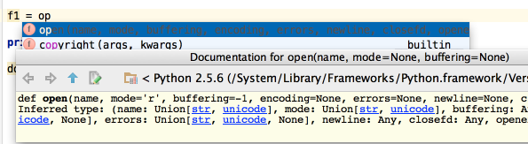

The shortcuts such as &shortcut:QuickJavaDoc; (View | Quick Documentation), &shortcut:ParameterInfo; (View | Parameter Info), &shortcut:GotoDeclaration; (Navigate | Declaration) and others can be used not only in the editor but in the code completion popup list as well.
